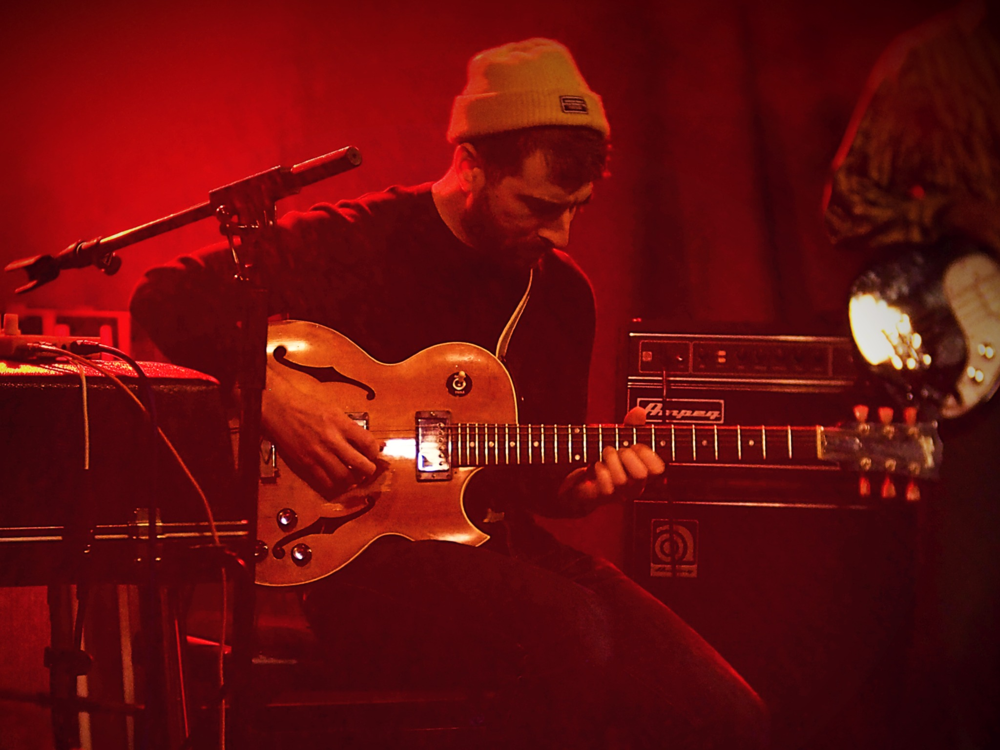

Velkommen
Her finder du originale artister under radaren.
Se koncerterKoncerter
Her ser du et udvalg af hvilke kommende events, der sker på Radar. Smagen er bred, og der er typisk noget for enhver smag.

Punkheads

Anastasia

Bag om Radar
Radar er et spillested for upcoming artister, der ønsker at afprøve deres kræfter med deres eget præg af nichemusik indenfor Indie, Rock og flere genre af musik.
Du vil opleve stemning udover det sædvanlige, møde nye mennesker der også har lysten til at lade sig inpirere af nytænkende ideer. Ligeledes vil du opdage, der mange frivillige som finder stedet meget givende og nærværende.
Alt dette spiller en stor rolle i hvorfor Radar har sin helt egen unikke charme.
blog

Radar forklarer Niche vs Mainstream
Kendte musikere, der har været under radaren